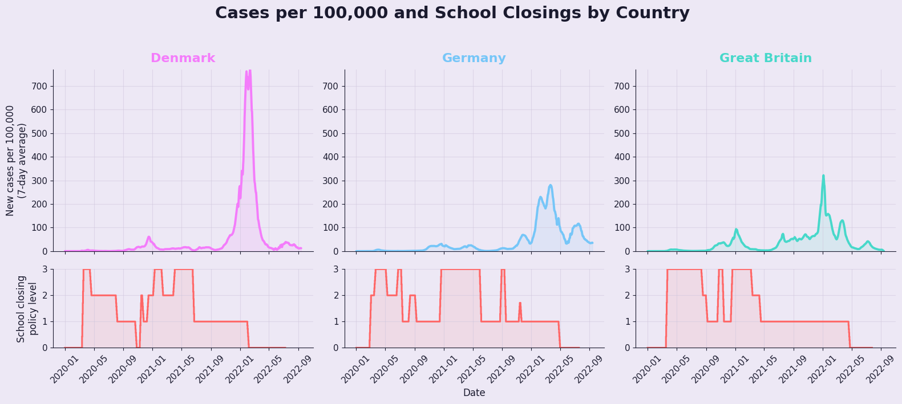
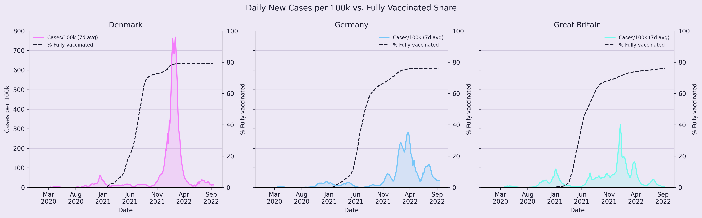
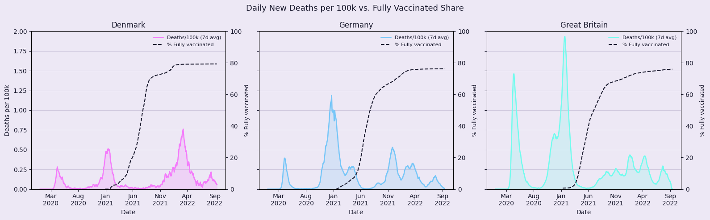
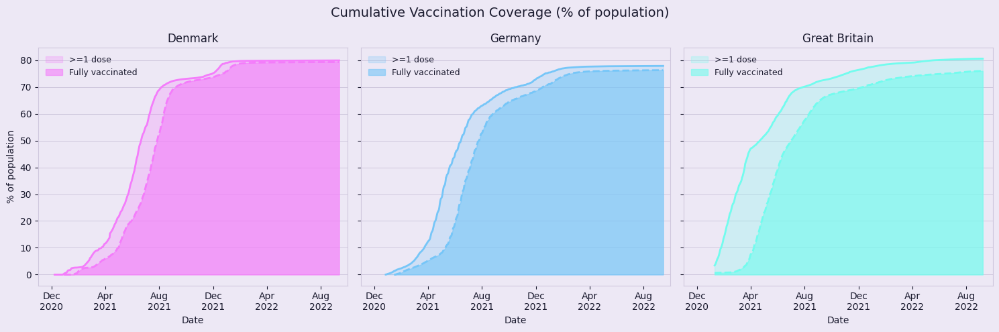

Section 1
A Virus Goes Global
We begin with a global view. Before comparing Denmark, Germany, and Great Britain, it is useful to see how unevenly different countries experienced the pandemic’s most severe periods. Figure 1 makes that development visible month by month, showing when countries moved into darker shades and how a local outbreak became a global crisis. This broader perspective also helps place the later country comparison in context.
Figure 1: Animated world map of monthly COVID-19 cases and deaths. The reader can switch between cases and deaths and use the slider to move through time month by month. The color scale indicates relative severity, with darker shades marking higher monthly levels. The map highlights how the pandemic evolved differently across countries and across time. Data: Google COVID-19 Open Data.
A crisis that moved in waves
Before comparing countries, we first look at the global shape of the pandemic. The virus did not spread and subside in a single peak. Instead, infection rates, as seen in Figure 2, rose and fell over time as countries implemented measures to contain transmission and the virus evolved into new variants.

Figure 2: Global new confirmed COVID-19 cases. This figure shows the worldwide sum of daily new confirmed cases, smoothed with a 7-day average and displayed in millions. It highlights the repeated infection waves that shaped the global course of the pandemic. Data: Google COVID-19 Open Data.
Figure 3 shows that deaths generally followed infections with a short delay. But later waves of infection did not lead to equally severe mortality peaks. While case numbers rose much higher in 2021 and 2022, deaths stayed below the worst levels seen earlier in the pandemic.

Figure 3: Global new COVID-19 deaths. This figure shows the worldwide sum of daily new deaths, smoothed with a 7-day average. Compared with cases, the death curve peaks later and follows a different overall pattern, showing that the human cost of the pandemic did not rise and fall at the same pace as infections. Data: Google COVID-19 Open Data.
The stringency index, as seen in Figure 4, and later vaccine rollouts help explain part of this changing picture, showing how restrictions were introduced sharply at first and then eased over time. Together, these figures mark the shift from a single global shock to a more uneven and evolving crisis.

Figure 4: Average global government stringency index. This figure shows the average level of government restrictions across countries over time. It captures the sharp rise in restrictions early in the pandemic and the more gradual easing that followed. Data: Google COVID-19 Open Data.
Section 2
One shared pandemic, three national timelines
Denmark, Germany, and Great Britain offer a focused comparison of neighboring but not identical responses.
COVID-19 did not affect every country in the same way, but it quickly became part of everyday life around the world. Rising case numbers were not just lines on a graph: they meant friends isolating at home, family members testing positive, cancelled plans, and a growing fear of what infection could mean for older relatives and vulnerable people. As the virus spread in waves, it reshaped how people worked, studied, travelled, and met each other. Deaths followed, turning public statistics into something deeply personal. It was in this atmosphere of uncertainty and concern that governments introduced restrictions, first rapidly and broadly, and later in more uneven ways across countries.
Although the pandemic was global, each country responded to the crisis in its own way, and the spread and consequences of COVID-19 varied significantly across regions. This analysis focuses on Denmark, England, and Germany - three countries with which the authors have firsthand experience of the pandemic. These countries are geographically and culturally closely connected, yet their responses to the pandemic differed markedly, making them particularly relevant for comparison.
The same virus, different waves
Case trajectories diverged sharply across the three countries.
Once population size is taken into account, the pandemic looks very different across the three countries, as seen in Figure 5. Great Britain experienced high early waves, Germany’s largest case surges arrived later, and Denmark saw a particularly dramatic rise during the Omicron period. Even when all three countries were part of the same European pandemic context, the timing and magnitude of waves did not fully align.
Figure 5: Population-adjusted COVID-19 case trajectories in Denmark, Germany, and Great Britain. By showing daily new confirmed cases per 100,000 inhabitants, this figure makes the three countries more directly comparable. It reveals distinct national wave patterns, especially the early British peaks and Denmark’s dramatic rise during the Omicron period. Data: Google COVID-19 Open Data.
Cases were not the whole story
Mortality waves followed a different pattern from confirmed infections.
Confirmed cases capture spread, but deaths show a different dimension of the pandemic. In Figure 6, the mortality curves do not simply mirror cases one-to-one. Great Britain saw severe early mortality, Germany experienced pronounced later peaks, and Denmark’s death rates remained lower in relative terms.
Figure 6: Daily new deaths per 100,000 across three countries. Using a 7-day average, this figure compares Denmark, Germany, and Great Britain on a population-adjusted scale. It shows that death rates did not rise and fall in the same way as confirmed cases. Data: Google COVID-19 Open Data.
Section 3
The Age of Lockdown
Stringency rose quickly across all three countries, but it did not stay high in the same way.
Government responses were not constant throughout the pandemic, as seen in Figure 7. All three countries tightened restrictions early on, but the duration, intensity, and timing of later measures differed. Great Britain was hit hard in the early stages of the pandemic and maintained the strictest restrictions and highest level of stringency for roughly the first year. Germany showed a similar level of restrictions to Denmark during the first ten months, but differed by maintaining comparatively high restrictions throughout the remainder of the pandemic.
Figure 7: Comparative government stringency in Denmark, Germany, and Great Britain. This figure tracks the average level of restrictions over time using the Oxford stringency index. It highlights both the sharp early lockdown phase and the different ways each country maintained or relaxed measures in the later pandemic.
The Stringency index is not one policy, but a bundle of many different interventions. It is also only a summary. To understand what people actually experienced, we need to look at the policies inside that index.
Staying home
Lockdown was not equally strict across time or place.
Stay-at-home requirements were one of the most visible and restrictive tools used during the pandemic. Unlike school closures or testing policies, they directly limited how much people could move, work, and interact. In the index used here, 0 means no measure, 1 recommends staying home, 2 requires staying home with normal exceptions, and 3 requires staying home with minimal exceptions.
Figure 8 shows how these measures changed over time in Denmark, Germany, and Great Britain alongside case levels. What stands out is not only when restrictions were introduced, but how differently they were used. All three countries moved quickly in March 2020 as the first wave emerged. Denmark’s parliamentary review describes a rapid shift from routine monitoring to a partial lockdown in mid-March, reflecting the urgency and uncertainty of that moment.

Figure 8: Stay-at-home requirements alongside cases and deaths. For each country, this figure places stay-at-home rules beneath case curves to show how movement restrictions changed across the pandemic. The comparison highlights both the shared early lockdown phase and the different paths taken later on.
After this shared starting point, the three countries begin to diverge. Denmark appears to use stricter stay-at-home measures for shorter periods, easing them earlier and more often. Germany and Great Britain return to higher levels more repeatedly, especially during later waves. This suggests that stay-at-home rules were not a fixed strategy, but a policy governments adjusted as conditions changed.
Research helps explain why these measures remain debated. Stay-at-home orders did reduce movement, which was one of their main aims, but their effects on cases and deaths are harder to isolate because many other factors were also at play. They were introduced in a period of high uncertainty, before vaccines were available, and were often used to slow transmission and reduce pressure on health systems.
At the same time, the costs were significant. Stay-at-home rules reshaped daily life, contributing to social isolation, economic disruption, and reduced access to services. Seen through Figure 8, they appear as temporary responses to pressure rather than a single long-term strategy. Their effects were real, but so were their trade-offs.
Workplace closings
Partial closures, lasting impact.
Workplace closures were one of the most sustained but generally less extreme restrictions across the three countries. In the index used here, 0 means no measures, 1 recommends closing or working from home, 2 requires closing for some sectors or categories of workers, and 3 requires closing all but essential workplaces.
Figure 9 shows how workplace-closing policies changed over time in Denmark, Germany, and Great Britain alongside case levels. What stands out is that the three countries spent much of the pandemic at level 2 rather than at the strictest level. This suggests that, instead of fully stopping work, governments often tried to reduce contact while keeping parts of the economy running.

Figure 9: Comparing workplace-closing rules with case trends. This figure shows daily new cases per 100,000 together with workplace-closing policy levels in Denmark, Germany, and Great Britain. It makes it easier to see when rules were tightened, how long they stayed in place, and how often countries relied on partial rather than full closures.
After this shared starting point, the three countries begin to diverge. Denmark appears to use stricter stay-at-home measures for shorter periods, easing them earlier and more often. Germany and Great Britain return to higher levels more repeatedly, especially during later waves. This suggests that stay-at-home rules were not a fixed strategy, but a policy governments adjusted as conditions changed.
That makes workplace closures different from many other restrictions. For a large share of workers, especially in office-based jobs, work did not disappear but moved into the home. In that sense, this policy was not only about limiting activity. It also accelerated a broader shift toward remote and hybrid work that lasted beyond the strictest pandemic phases.
At the same time, this shift was uneven. People in higher-income and more office-based jobs were much more likely to work from home, while others continued working in person or faced greater insecurity. Workplace closures therefore changed daily life in very different ways depending on the kind of work people did.
Overall, workplace closures stand out as a policy that did more than temporarily restrict movement. They reshaped where work happened, who could work safely from home, and how many people thought about flexibility after the pandemic.
Public transport closings
A small index with big social consequences.
Public transport was treated differently from many other restrictions. In Figure 10, the index is almost binary: 0 means no closure, while 1 means public transport was closed or severely restricted. Unlike schools or workplaces, there is little middle ground here. Governments either kept the system broadly open, or they decided that public transport itself was part of the risk.
Figure 10: Comparing public transport closures with case trends. This figure shows daily new cases per 100,000 together with public transport-closing rules in Denmark, Germany, and Great Britain. It makes it easier to compare how long each country kept this restriction in place and how those periods related to major case waves.
Denmark used this restriction for the shortest period, Germany for longer, and Great Britain for the longest. At first, this seems to follow the scale of daily travel: Denmark had far fewer journeys per day than Germany or Great Britain. But the comparison is not perfect. Germany had the highest estimated public transport volume, yet Great Britain kept restrictions in place for longer. That raises the same question running through this article: was one country being more careful, or was another taking more risk?
The wider evidence suggests there is no simple answer. Public transport ridership fell sharply across countries during 2020 and 2021, partly because people feared infection, partly because governments restricted movement, and partly because commuting collapsed as work and education moved online. Studies also show that public transport use fell most during weekday peak commuting hours, while lower-income and carless passengers were often more likely to keep relying on it. This matters because closing or discouraging public transport does not affect everyone equally. For some people it removed a risky environment. For others it removed access to work, school, healthcare, or family support.
School closings
School closures made the pandemic visible in everyday life.
School closures were one of the most immediate ways people experienced the pandemic. They reshaped daily life at home and affected around 1.3 billion students worldwide.
In Figure 11, the lower panels show the school closing index, which ranges from 0 to 3. A value of 0 means no measures, 1 indicates recommendations, 2 reflects partial closures, and 3 represents full school closures.

Figure 11: School-closing policies alongside case rates across three countries. For each country, this figure places school-closing rules beneath daily new cases per 100,000. The comparison highlights both the shared early turn to closures and the different reopening paths that followed.
All three countries introduce school restrictions at roughly the same time in early 2020. Denmark and Great Britain move quickly to full closures (index 3), while Germany starts at partial closure before also reaching full closure. After this shared start, their paths begin to diverge.
Great Britain appears to hold stricter measures for longer in 2020, while Denmark and Germany begin easing sooner. Denmark stands out for reopening more gradually and even reaching no restrictions by late 2020, though this did not last as cases rose again. Around May 2021, the three countries move in the same direction, lowering school restrictions at roughly the same time.
Research helps explain why these decisions were so difficult. Evidence on the effectiveness of school closures is mixed. Some studies suggest limited or unclear effects on overall transmission, especially since closures were introduced alongside other measures, making it hard to isolate their impact. At the same time, international organisations such as UNESCO and the WHO have highlighted that closures were consistently linked to harms in education and well-being.
Those harms are more clearly documented. Studies estimate that students lost several months of learning on average, with longer closures linked to greater losses. There is also evidence that these effects were uneven, with disadvantaged students more affected.
Overall, the figure shows how different countries balanced uncertainty. The school closing index captures how strict policies were, but it does not tell us directly how effective they were. Together with the research, it suggests that school closures were not just a public health tool, but a complex trade-off between uncertain benefits and more clearly documented costs.
By 2021, however, the story begins to change. The question was no longer only how to restrict society, but how to reopen it.
Section 4
The beginning of the end
Testing as a Tool
From broad restrictions to reopening strategies.
The first half of 2021 is particularly interesting, as the countries began reopening at different paces following a fall and winter of strict lockdowns. Testing strategies, in particular, appear to have played an important role in determining when countries reopened. In Denmark, mass testing was used as a tool to facilitate reopening earlier than in many other European countries.
Figure 12: Interactive world map of COVID-19 testing over time. This figure shows how testing levels changed across countries throughout the pandemic. The reader can move through time to see where testing increased, where it remained limited, and how uneven testing capacity was across the world. Data: ourworldindata.org.
Figure 13: Testing intensity and testing policy in Denmark, Germany, and Great Britain. The upper panels show daily tests per 100,000 people, smoothed with a 7-day average, while the lower panels show the testing policy index on a scale from 0 to 3. Higher values indicate broader access to testing, from no formal policy at 0 to open public testing at 3. Data: Google COVID-19 Open Data.
Figure 12 and Figure 13, show that Denmark tested extensively during this period compared with both Germany and Great Britain. Great Britain also built up substantial testing capacity and conducted testing at a high rate. Germany, by contrast, carried out relatively little testing compared with the other two countries. Its testing index never exceeded 246 tests per 100,000 inhabitants, whereas Denmark peaked at 3,285 and Great Britain at 2,085.
A testing index of 3,285 means that approximately 3.3% of the population was tested each day. For Denmark, with a population of 5.85 million, this corresponds to around 192,000 tests per day and 5.77 million tests per month—equivalent to nearly the entire population being tested monthly. This does not mean that every individual was tested once per month; rather, many people were tested multiple times per week in order to attend schools, workplaces, or obtain a digital corona passport, which was required to access many social events. This strict testing policy is also reflected in Denmark’s high stringency index during this period.
An article from Denmark’s Statens Serum Institut suggests that mass testing may have saved Denmark approximately six weeks of lockdown and prevented around 9,000 hospitalizations.
Vaccination
The later pandemic was shaped by vaccine access.
Testing was certainly not the only measure used to combat the pandemic and reopen society safely. Vaccination programs also played a major role in reopening efforts and help explain, to some extent, why the extremely high infection numbers seen in the later stages of the pandemic did not result in the same proportion of deaths observed at the beginning of the pandemic.

Figure 14: Cases and full vaccination over time across three countries. For each country, this figure places daily new cases per 100,000 alongside the share of the population that was fully vaccinated. The comparison highlights how later case waves unfolded in a context of much higher vaccine coverage than earlier stages of the pandemic.

Figure 15: Daily new deaths per 100,000 and fully vaccinated share in Denmark, Germany, and Great Britain. This figure compares population-adjusted death rates with the share of the population that was fully vaccinated in each country. It shows that later mortality waves generally remained below the worst early peaks, even after case numbers rose again, suggesting that vaccination changed the relationship between infection and death.

Figure 16: Comparing vaccine rollout in Denmark, Germany, and Great Britain. This figure tracks cumulative vaccination coverage as a share of the population, distinguishing between at least one dose and full vaccination. It makes it easier to compare how quickly protection expanded across the three countries.
Section 5
The Question That Remains
Revisiting the trade-offs of pandemic policy
Compare countries, outcomes, and restrictions to reflect on what you would have done.
Looking back, some parts of the pandemic response seem easier to defend than others. Early restrictions were introduced in a period of deep uncertainty, when governments were trying to slow transmission and prevent health systems from being overwhelmed. But as time went on, the trade-offs became harder to ignore. Some measures may have bought time, while others carried social and economic costs that are clearer in hindsight.
This leaves us with a question that the data cannot answer on their own:
If you had been in charge knowing what you know now, how would you have handled it?
Figure 17 lets you explore those choices for yourself.
Compare countries, outcomes, and restrictions across different phases of the pandemic. Look for patterns, but also for trade-offs. No country offers a perfect template, and no single graph can tell us who managed the pandemic best. It also reminds us that many of these decisions were made under pressure, without the hindsight we now have. What we can do today is use that hindsight more carefully when thinking about the future.
Start exploring!
Use the explorer below to compare up to three countries of your choice. For each country, you can select one variable for the left axis and one for the right axis, including cases, deaths, vaccination, testing, or different policy measures. This makes it possible to compare not only outcomes, but also the restrictions and strategies that may have shaped them.
Figure 17: Interactive country and policy explorer. This figure allows the reader to select up to three countries and compare different combinations of cases, deaths, vaccination, testing, and policy measures. By changing the axes and countries, the reader can explore how different responses and outcomes unfolded over time.
Visit the explainer notebook to get a deeper understanding of the data used in this data story.
Data Sources
About the data. To make comparisons more consistent, we align countries across the same time period and exclude cases with insufficient data coverage. Reported cases and deaths should still be interpreted with caution, since testing levels varied over time and across countries, and official reporting may not always reflect the full scale of infections or mortality.
- Google. (n.d.). COVID-19 open data: Epidemiology. Google Health. https://health.google.com/covid-19/open-data/
- Google. (n.d.). COVID-19 open data: Oxford government response. Google Health. https://health.google.com/covid-19/open-data/
- Google. (n.d.). COVID-19 open data: Vaccinations. Google Health. https://health.google.com/covid-19/open-data/
- Our World in Data. (2026). COVID-19 data. GitHub. https://github.com/owid/covid-19-data/
References
- BBC Future. (2025, March 4). The countries that never locked down for COVID-19. BBC. https://www.bbc.com/future/article/20250304-the-countries-that-never-locked-down-for-covid-19
- Cho, E. Y., & Choe, Y. J. (2021). School closures during the coronavirus disease 2019 outbreak. Clinical and Experimental Pediatrics, 64(7), 322–327. https://doi.org/10.3345/cep.2021.00353
- Dasgupta, S. (2022). School in the time of COVID. Frontiers in Education, 7, 1005270. https://doi.org/10.3389/feduc.2022.1005270
- Jakubowski, M., Gajderowicz, T., & Patrinos, H. A. (2025). COVID-19, school closures, and student learning outcomes: New global evidence from PISA. npj Science of Learning, 10(1), Article 5. https://doi.org/10.1038/s41539-025-00297-3
- UNESCO Chair Global Health & Education. (n.d.). COVID-19 and schools. https://unescochair-ghe.org/resources/covid-19-and-schools/
- Moreland, A., Herlihy, C., Tynan, M. A., Sunshine, G., McCord, R. F., Hilton, C., Poovey, J., Werner, A. K., Jones, C. D., Fulmer, E. B., Gundlapalli, A. V., Strosnider, H., Potts, C., García, M. C., Honeycutt, S., Baldwin, G., Popovic, T., Rascoe, A., Holloway, J., … CDC Public Health Law Program. (2020). Timing of state and territorial COVID-19 stay-at-home orders and changes in population movement—United States, March 1–May 31, 2020. Morbidity and Mortality Weekly Report, 69(35), 1198–1203. https://doi.org/10.15585/mmwr.mm6935a2
- BBC News. (2021, March 23). Covid: Sweden, Norway and Denmark pause use of Oxford-AstraZeneca vaccine. BBC. https://www.bbc.com/news/world-europe-56486732
- Folketinget (Danish Parliament). (2021, January). Managing the COVID-19 crisis: Report delivered to the Standing Orders Committee of the Danish Parliament.
- UK Government. (2020, March 23). Staying at home and away from others (social distancing). https://www.gov.uk/government/publications/covid-19-stay-at-home-guidance
- Adrjan, P., Ciminelli, G., Judes, A., Koelle, M., Schwellnus, C., & Sinclair, T. M. (2025). Working from home after COVID-19: Evidence from job postings in 20 countries. Labour Economics, 96, 102751. https://doi.org/10.1016/j.labeco.2025.102751
- Viner, R. M., Russell, S. J., Croker, H., Packer, J., Ward, J., Stansfield, C., Mytton, O., Bonell, C., & Booy, R. (2021). School closure and management practices during coronavirus outbreaks including COVID-19: A rapid systematic review. The Lancet Child & Adolescent Health, 4(5), 397–404. https://doi.org/10.1016/S2352-4642(20)30095-X
- Coşkuner Aktaş, S. (2025). Was COVID-19-related working from home (WFH) a chance for change? Gender-based experiences of parents. Humanities and Social Sciences Communications, 12(1), Article 465. https://doi.org/10.1057/s41599-025-04773-4
- Dias da Silva, A., Georgarakos, D., & Weißler, M. (2023). How people want to work: Preferences for remote work after the pandemic. ECB Economic Bulletin (Issue 1). European Central Bank. https://www.ecb.europa.eu/press/economic-bulletin/focus/2023/html/ecb.ebbox202301_04~1b73ef4872.en.html
- Abildgren, K., Hviid, S. J., & Kuchler, A. (2025, April 23). Working from home and housing demand during the pandemic (Working Paper No. 210). Danmarks Nationalbank.
- Reifenscheid, M., & Möhring, K. (2025). Support for a legal right to work from home: Do those who need it, support it? The COVID-19 pandemic as natural experiment. Journal of Occupational and Organizational Psychology, 98, e70046. https://doi.org/10.1111/joop.70046
- Partington, R. (2025, May 15). Post-Covid home working has failed to level up UK economy, study finds. The Guardian. https://www.theguardian.com/business/2025/may/15/covid-pandemic-home-working-careers-uk-economy
- Din Offentlige Transport. (n.d.). DOT's strategy. https://dinoffentligetransport.dk/en/about-your-public-transport/dots-strategy/
- Statistisches Bundesamt (Destatis). (2024). Passengers carried in public transport. https://www.destatis.de/EN/Themes/Economic-Sectors-Enterprises/Transport/Passenger-Transport/Tables/passengers-carried.html
- Department for Transport. (2024). Transport statistics Great Britain 2024. https://www.gov.uk/government/statistics/transport-statistics-great-britain-2024/transport-statistics-great-britain-2023-domestic-travel
- Buehler, R., Pucher, J., White, P., & Currie, G. (2025). Public transport and the COVID-19 pandemic: A comparative analysis of trends and policies in Great Britain, Germany, the USA, Canada, and Australia. Transportation Research Part A, 199, 104549. https://doi.org/10.1016/j.tra.2025.104549
- Henrion, V., Ingvardson, J. B., & Nielsen, O. A. (2023). The influence of the COVID-19 pandemic on travel behaviour in the Greater Copenhagen area. Journal of Advanced Transportation, 2023, Article 9964912. https://doi.org/10.1155/2023/9964912
- Statens Serum Institut. (2024, October 29). Computermodel: Massetestning under coronapandemien forhindrede flere ugers nedlukning og tusindvis af indlagte. https://www.ssi.dk/aktuelt/nyheder/2024/massetestning-under-coronapandemien--forhindrede-flere-ugers-nedlukning-og-tusindvis-af-indlagte